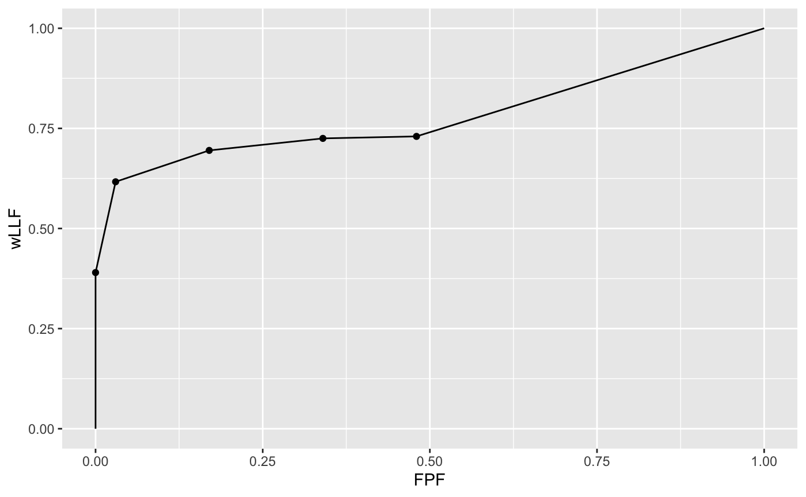
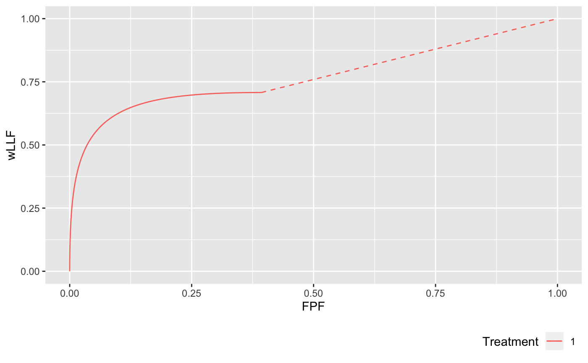

Ch17Vig1PlotRsmOpCh.Rmddataset members lesionID and lesionWeight and lesDist and lesWghtDistr, which do not pertain to any dataset.lesDist.lesWghtDistr.str(dataset04$lesionID)
#> num [1:100, 1:3] 1 1 1 1 1 1 1 1 1 1 ...
str(dataset04$lesionWeight)
#> num [1:100, 1:3] 1 1 1 1 1 1 1 1 1 1 ...
## Following example is for mu = 2, lambda = 1, nu = 0.6. 20% of the diseased
## cases have a single lesion, 40% have two lesions, 10% have 3 lesions,
## and 30% have 4 lesions.
lesDistr <- rbind(c(1, 0.2), c(2, 0.4), c(3, 0.1), c(4, 0.3))
## On cases with one lesion the weights are 1, on cases with 2 lesions the weights
## are 0.4 and 0.6, on cases with three lesions the weights are 0.2, 0.3 and 0.5, and
## on cases with 4 lesions the weights are 0.3, 0.4, 0.2 and 0.1:
lesWghtDistr <- rbind(c(1.0, -Inf, -Inf, -Inf),
c(0.4, 0.6, -Inf, -Inf),
c(0.2, 0.3, 0.5, -Inf),
c(0.3, 0.4, 0.2, 0.1))
p <- PlotRsmOperatingCharacteristics(mu = 2, lambda = 1, nu = 0.6,
lesDistr = lesDistr, lesWghtDistr = lesWghtDistr,
legendPosition = "bottom", nlfRange = c(0, 1), llfRange = c(0, 1))
p$wAFROCPlot
The Excel file has three worsheets. These are named Truth, NL or FP and LL or TP.
x$NL or x$LL list members is the total number of modalities, 2 in the current example.x$NL or x$LL list members is the total number of readers, 3 in the current example.x$NL is the total number of cases, 8 in the current example. The first three positions account for NL marks on non-diseased cases and the remaining 5 positions account for NL marks on diseased cases.x$LL is the total number of diseased cases, 5 in the current example.x$NL is determined by the case (diseased or non-diseased) with the most NL marks, 2 in the current example.x$LL is determined by the diseased case with the most lesions, 3 in the current example.